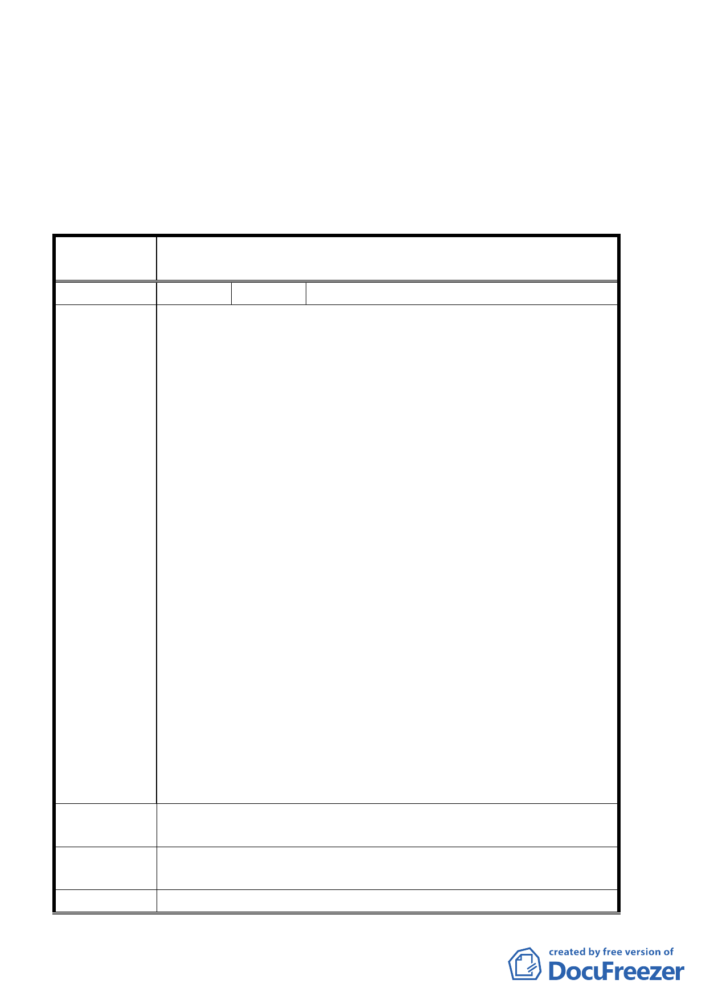

立，本計畫案內有涉及保護區變更為住宅區部分暫予保留。
三、其餘有關計畫內容同意依本案修正對照表及委員會議簡報內
容修正通過。
四、公民或團體所提意見審決如后附綜理表。
臺北市都市計畫委員會公民團體陳情意見綜理表
案 名 臺北市北投區都市計畫通盤檢討案（主要計畫）案
編
號１
陳情人 陳榮國
陳情位置：北投區大業段第三小段 509-515、518、519、550、
551、461-468 地號
陳情理由：
一、捷運北投站東側住宅區係毗鄰大眾捷運站出入口並具商業
區潛力之街廓。
二、捷運北投站係臺北與淡水站之間最大捷運場站，其出入口
周邊 200 公尺的生活圈已隨捷運通車逐漸興盛，商業活動
迅速開展。本住宅區依『臺北市主要計畫商業區通盤檢討
案』之相關規定，符合商業區檢討原則與住宅區檢討原則。
三、依本計畫北投區各捷運場站，由住宅區變更為商業區的場
陳情理由
站有捷運關渡站西側出入口、捷運唭哩岸站南側、捷運明
德站出口明德路以南，獨漏北投區內最大場站『捷運北投
站東側』實為遺珠之憾。
四、捷運北投站東側之中正街與光明路周邊商業區業已畫定為
更新地區，故本陳情範圍（鄰接更新範圍西南角）有必要
畫定為商業區，以配合整體商業發展之需要。
五、捷運北投站向地主徵收東側周邊土地時，黃前市長黃大洲
先生曾親自向陳情人等公開表示：「捷運出入口周邊二○
○公尺範圍土地保證一定會變更為商業區，以補償地主土
地被徵收的之損失」。政府施政應有一貫性，請履行前市
長之承諾。
建 議 辦 法 請將上項位於北投站東側土地由第三種住宅區變更為商業區
專 案小組 審 93.10.14 專案小組第八次審查會議：同意陳情人建議變更為商
查 結 論 業區。請陳情人再洽發展局瞭解商業區相關細節規定。
委 員 會 議 同街廓土地變更為商三（特）。
第 4 頁，共 49 頁